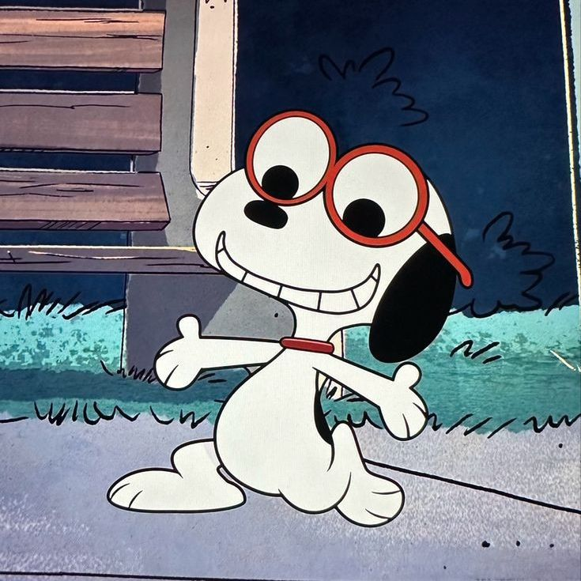
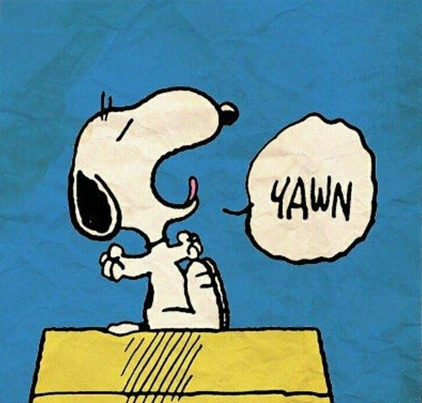

HABILIDADES E COMPETÊNCIAS: H4, H7, H8
OBJETIVO: Ensinar a importância e como documentar requisitos não funcionais em sistemas.
ASSUNTO: Mostra como identificar, classificar e escrever requisitos que definem como o sistema deve funcionar (ex: desempenho, segurança, usabilidade), com aplicação prática em um sistema que deveríamos criar de uma hamburgueria.
CRÍTICA: Esse conteúdo destaca que um sistema não funciona sozinho, e mesmo se funcionar, ele precisa funcionar bem, com qualidade e boa experiência para o usuário. A documentação dos requisitos não funcionais ajuda a garantir isso.
HABILIDADES E COMPETÊNCIAS: H1, H2, H3, H4, H6, H7
OBJETIVO: Desenvolver e implantar um sistema inteligente de monitoramento e controle do consumo de energia elétrica em residências, utilizando sensores IoT, banco de dados e aplicativos móveis, com foco em otimizar o uso da energia e promover sustentabilidade.
ASSUNTO: O projeto faz parte da Situação de Aprendizagem (SA) do 3º ano do curso técnico do SENAI, integrando diversas disciplinas como Banco de Dados, IoT, Programação de Aplicativos, Modelagem de Sistemas, entre outras. A proposta é criar um sistema inteligente que use tecnologia IoT para monitorar o consumo de energia em tempo real, gerar alertas e relatórios, e auxiliar o usuário a reduzir desperdícios, otimizando o consumo.
CRÍTICA: Eu adorei fazer essa atividade! Meu grupo foi incrível, super colaborativo e criativo, trabalhar com eles fez total diferença. O tema que escolhemos está sendo muito legal de desenvolver, e foi super satisfatório ver tudo tomando forma aos poucos. Essa abordagem prática e contínua ajudou bastante a fixar o conteúdo.
HABILIDADES E COMPETÊNCIAS: H1 a H7
OBJETIVO: Criar um protótipo no Figma visa facilitar a visualização de interfaces, desenvolver habilidades práticas em design, promover a colaboração entre alunos e incentivar a iteração rápida de ideias.
ASSUNTO: Os assuntos integrados incluem design de interface, experiência do usuário (UX), desenvolvimento front-end, metodologias ágeis e testes de usabilidade.
CRÍTICA: Inicialmente, posso admitir que odiei a ideia de ter que fazer um Figma tão grande para a nossa Situação de Aprendizagem. Quer dizer, é um projeto extenso que demandaria muito tempo para ficar pronto. Mesmo sendo apenas um protótipo, queríamos que ficasse bem feito e interativo, com todas as funcionalidades que imaginamos, para lembrar de implementá-las quando formos codar o site. Ou seja: deu muito trabalho. Mas, apesar de todo o esforço e do tempo investido, posso dizer que gostei de aprender a mexer melhor no Figma e fiquei orgulhosa do resultado que entregamos. Todos trabalharam juntos e conseguimos finalizar um trabalho que considero, no mínimo, satisfatório. Apesar de ter me irritado um pouco no decorrer do processo, essa foi uma das atividades que eu mais gostei de fazer esse trimestre.
HABILIDADES E COMPETÊNCIAS: H1 a H7
OBJETIVO: Compreender e aplicar modelos conceituais para representar informações e relações de um sistema de forma clara e organizada, permitindo a análise e documentação antes da implementação.
ASSUNTO: Diagramas de entidade-relacionamento (DER) e diagramas UML, identificação de entidades, atributos, relacionamentos e regras de negócio, mostrando como estruturar os dados e processos de maneira eficiente para apoiar o desenvolvimento de sistemas e bancos de dados.
CRÍTICA: Eu até que gostei bastante dessa matéria, a atividade foi bem explicada e em qualquer caso de dúvida a professora estava lá para nos auxiliar.

